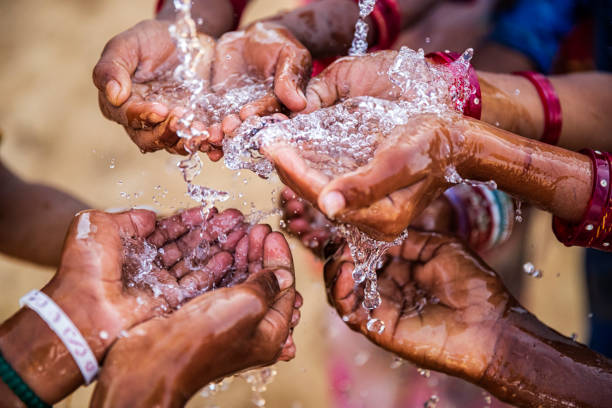

Recent Blog Posts

2 jan 2024
Water treatment Plant installed at Agawli
Introduction to Wireframing and its Principles. Learn from the best in the industry.


2 jan 2024
Installation of 60 Lph dosing pump
The rise of RESTful APIs has been met by a rise in tools for creating, testing, and manag...
2 jan 2024
Gravity based dosing system installation at Lalutpur, Nepal.
Prime Minister Sher Bahadur Deuba has said a water treatment centre has been developed in the upper belt
of the Bagmati
River to ensure cleanliness in the river that flows through the Pashupati area. Likewise, Minister for
Drinking Water
Umakant Chaudhary said the government would move ahead by giving priority to the task of water treatment
and the
government’s sole focus so far is on providing drinking water to the citizens.
All Blog Posts
TREATMENT OF WASTEWATER IN TEKU HOSPITAL
Health Environment and Climate Action Foundation (Hecaf360) is one
of…

WHAT IS SEWAGE TREATMENT PLANT AND HOW IT Works?
What is STP? Estimates vary, but an average each person…
CONTRACT AGREEMENT BETWEEN CDF AND SAT
Introduction to Wireframing and its Principles. Learn from the best in
the industry.

A WEBINAR ON THE IMPORTANCE OF CHLORINATION AND ITS METHOD
24th Nov, 2023 , we held a webinar for the first time to emphasize on
the importance and ....

WATER TREATMENT CENTER FOR CLEANLINESS IN BAGMATI RIVER
Prime Minister Sher Bahadur Deuba has said a water treatment centre
has been developed in ...
CHLORINATION SYSTEM INSTALLED IN 48 DIFFERENT SITES OF NEPAL
Supreme Associates Traders located at Gairidhara Marg, Kathmandu is
now…